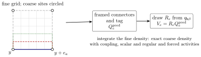

IThe theorem and the architecture of its proof 4
1The result 4
1.1Proof status 6
1.2Earlier work and the method 6
1.3Reading guide 8
1.4Notation and conventions 8
2Definitions 9
2.1The gauge group and the Wilson measure 9
2.2Wilson families and their correlations 10
2.3Local fields 12
2.4Euclidean properties 14
2.5Field spaces and phases 15
2.6Wightman theories 15
2.7The trace and product statements 16
3The main theorem 17
4Strategy of the proof 19
4.1Why the ultraviolet induction closes 19
4.2Tuning, uniqueness and convergence 23
4.3Rotations 24
4.4Phases and reconstruction 25
4.5The trace 25
5The renormalization group 26
5.1Scales and the block map 26
5.2The density and its norms 28
5.3The inductive step 31
5.4Multiscale trajectories 32
5.5Local fields under blocking 34
5.6Uniform bounds and the fixed-volume limit 35
6The continuum limit, stress, phases, trace and products 36
6.1The volume limit and the field calculus 36
6.2Stress and rotations 38
6.3Phases and reconstruction 41
6.4Trace and products 43
7Deduction of the main theorem 46
8A weaker existence statement 47
8.1Hierarchy data and the conditions Q0–Q6 48
8.2A generalized free-field example 49
8.3Conventions for hierarchy data 51
8.4An averaged countertest 52
9Constants and order of choice 52
Index of notation 54
IIProofs 57
10Local polynomial fields 57
10.1Labels, test holonomies and the Taylor map 58
10.2Taylor-normalized sections 59
10.3Small-field bounds 61
10.4Auxiliary equation sections 62
10.5Example: the curvature square 66
11Gauges and block integration 67
11.1The block kernel 68
11.2Free quadratic forms 72
11.3The stationary background and Gaussian coordinates 79
11.4Inverse, vertex and Ward estimates 85
11.5The local large-field energy 93
11.6Sector Gaussian integration 100
12Path actions and the one-loop coupling 112
12.1Curvature coordinates and the path action 112
12.2Fourth-order matching 114
12.3The determinant comparison 119
12.4The one-loop coefficient 122
13Activities and the inductive step 129
13.1The local expansion 132
13.2Local quadratic subtraction 150
13.3Forced fusion, activity bounds and the reset 152
13.4Continuity at fixed volume 158
13.5The Wilson start 159
13.6The specified recursion 161
13.7Weighted analytic estimates 163
14Trajectories, marked fields and ultraviolet convergence 177
14.1Trajectories and tuning 178
14.2Marked fields and volume-uniform estimates 185
14.2.1One marked insertion 185
14.2.2Chessboard seminorms and replicated sources 192
14.2.3Negligible errors and local matching 200
14.2.4Equation identities and coefficient corrections 204
14.2.5Comparison with free fields 207
14.2.6Bounds for lattice differences 217
14.2.7Bounded approximations 220
14.3Full ultraviolet convergence 224
15Infinite volume and field calculus 231
15.1Volume limits 231
15.2Separated cells and negligible errors 233
15.3Quotient fields 234
15.4Euclidean properties 237
15.5Repeated reflected words 238
16Free fields, Ward identities and rotations 239
16.1Free fields 240
16.2Lattice inputs 247
16.3Free comparison and the conserved line 254
16.4Coordinate reflection spaces and spectral estimates 257
16.5Ward identities and rotations 263
17Phases and reconstruction 270
17.1Compression and phases 270
17.2Reconstruction 276
18The trace law and non-free comparisons 284
18.1Trace and spectrum 284
18.2Precise non-free comparisons 301
19Products and contact subtractions 305
19.1Products and nested clusters 310
19.2Contact subtractions 323
References 332
The proof fixes one lattice family, takes its two limits and identifies the resulting fields; every estimate applies to this same family. Figure 2 shows the order in which the principal results use one another. This section explains the mechanisms that make the main steps work; Sections 5–6 state the results with the ideas of their proofs.
Blocking integrates the fine links against a probability kernel and returns an exact density for the coarse links (Definition 5.1); it lowers the level from \(m + 1\) to \(m\) and multiplies the spacing by the odd block ratio \(\ell_m\) (Figures 3 and 4). The density is written as a curvature action with the running coupling \(\beta_m\), a scalar normalization, regular activities on small-field supports and forced activities covering every large-field site (Section 5.2). The equality is exact; the estimates control the coordinates in which it is written. Five points make the induction close.
 |
Figure 4. One block step, shown in a two-dimensional slice. The three routes schematically represent fine transports aligned at the endpoints of one highlighted coarse edge; the actual offset connectors, frames and fallback frame or connector branches are specified in Section 5. Given the fine configuration and tag, the draw uses the normalized density \(q_{\textsf{b} \beta}\) around the predictor. Integrating the fine links gives the exact coarse density; the activity bounds require the inputs in the proof-status notice. The spacing changes from \(a_{m + 1}\) to \(a_m = \ell_m a_{m + 1}\). |
Comparison
Consequence
\(\beta t^5 \asymp b^{- 3 / 2} M^5 = o
(\varepsilon)\)
the Wilson energy matched through fourth order leaves a
regular error below the bound
\(t^3 / \varepsilon = b^{- 2 / 5} M^3 \to 0\)
a cubic term with bounded coefficient at the threshold
is below the bound
\(\varepsilon / t^2 = b^{- 1 / 10} M^{- 2} \to 0\)
a quadratic term at the threshold does not: residual
quadratic coefficients go into the coupling
\(\beta t^2 \asymp M^2\)
a plaquette above the threshold costs a factor of order
\(e^{- cM^2}\), which is \(o (b^{- k})\) for every fixed
\(k\)
The forced activity bound \(e^{- M^{1 / 5}}\) is \(o (b^{- k})\) for every fixed \(k\) but much larger than \(e^{- cM^2}\); this leaves room for the combinatorial losses of the forced terms.
| \(\displaystyle \lambda_i = \frac{(- 1)^i \binom{4}{i}}{2^4 \hspace{0.17em} 4!}, \qquad G_x = \sum_{i = 0}^4 \lambda_i \sum_{y \in \Lambda_i} F^{(i)}_y (V_{i, x}) \hspace{0.17em} .\) | (4.1) |
Lemma
On configurations without large-field sites, \(\sum_y F_y = c| \Lambda | + \sum_x G_x\) for a constant \(c\).
This is Lemma 13.7, which also controls the correction near
large-field sites. Two facts give it. On each auxiliary torus the total
of the selected family is, up to the omitted terms, a normalized local
integral, in which the flat value, the classical cubic and quartic terms
and the one-loop quadratic term are subtracted exactly and Gaussian
parity removes a lone cubic term; what remains has at least three
factors of size \({b'}^{- 1 / 2 + o (1)}\) or a further Taylor gain. To
recover a local function from totals, classify the sites of
\(\Lambda_i\) by their distances through the read radius \(R\) from the
reflection faces and by their local fold slopes, including wrapped
neighbours. These data fix the offsets \(\phi_i (y + u) - \phi_i (y)\)
on the read support. Evaluate the summand at \(y\) on \(V_{i, x - \phi_i
(y)}\), where \(\phi_i (y)_a = \min \{t_a, 2 (w + i) - t_a \}\) for the
least residue \(t_a\) modulo \(2 (w + i)\). This shift appears only
after reindexing the sum over \(x\); in
Figure 5 separates the singleton and mixed contributions carried by the same integration history.
Three different tasks concern the cutoff, and they are not interchangeable.
Task
Mechanism
What it does not supply
Reach the endpoint coupling \(\bar{\beta}\) at level
zero
Continuous shooting and bracketing (Theorem 5.6)
Uniqueness of the shooting parameter
Identify the limits at a fixed level
Weighted contraction toward the common endpoint
(Proposition 5.7)
Convergence of the scalar normalizations
Remove the cutoff at fixed volume
Fixed-level convergence and a uniform stopping error
(Theorem 5.9)
An infinite-volume limit without refinement
Uniqueness of the shooting parameter is not needed: trajectories for different cutoffs are compared only through their common endpoint, and two fixed-level limits with that endpoint coincide by the contraction. Remark 7.2 records the uniqueness and analytic dependence that the recursion also gives; the proofs do not use it.
The ultraviolet limit is a Cauchy argument through a common level (Figure 6). The stopping bound and the fixed-level marked graph comparison used below remain conditional on the higher-mode and graph estimates in the proof-status notice. For insertions at points of \(a_m \mathbb{Z}^4\), which lies in every finer lattice, let \(M_N\) be the lattice moment and \(C_{N, m}\) the normalized level-\(m\) integral of the unmarked density and the transferred one-insertion functions, with the components joining two or more insertions omitted. For cutoffs beyond a threshold depending on \(m\),
where \(F_0\) does not depend on \(m\) or on the cutoffs (Lemma 14.35). The reason is separation. At fine levels the sites of distinct insertions are at least \(B_m^2\) apart, so every omitted component, which joins two or more insertions, has covering number at least \(B_m / 64\). Multiplying all these components by a complex \(z\) with \(|z| < e^{B_m / 64}\) therefore costs only two units of the support exponent, and the resulting normalized integral \(F_m (z)\), carried back to a base level fixed before \(m\), is bounded there by \(F_0\). Since \(F_m (1) = M_N\) and \(F_m (0) = C_{N, m}\), Cauchy's estimate gives \(|M_N - C_{N, m} | \leqslant 2 F_0 e^{- B_m / 64}\). Choose \(m\) to make the stopping errors small, hold it fixed, and let \(N, N' \to \infty\). The middle term tends to zero for three reasons. First, the scalar normalization cancels. Write \(\text{dens}^{\circ} \hspace{0.17em} \rho_{N, p, m}\) for the density of Definition 5.2 with \(v_{\text{sc}}\) replaced by zero, so that \(\text{dens} \hspace{0.17em} \rho_{N, p, m} = e^{v_{\text{sc}} | \Lambda |} \text{dens}^{\circ} \hspace{0.17em} \rho_{N, p, m}\) with \(\Lambda = \Lambda_{L_p D_m}\), and \(H^{\circ}_{N, m}\) for the integrand of the numerator of \(C_{N, m}\) with \(v_{\text{sc}}\) replaced by zero, formed from the same coordinates and the transferred one-insertion functions, regular and forced. Then
and the constant \(v_{\text{sc}}\) of \(\rho_{N, p, m}\), whose convergence is not asserted, drops out. Second, the unmarked coordinates converge at each fixed level (Proposition 5.7), and the denominator stays above a positive constant for all large cutoffs by restricting every link to a fixed small Haar-measure ball around the identity (Lemma 14.34). Third, the singleton functions converge by a common-core argument for the actual one-mark steps (Lemmas 14.33 and 14.34). At each fixed level the steps contract distances by one half on a common complete class. If their outputs on each fixed input from a dense core converge, then, for any fixed \(h > m\), the finite trajectories started from a common graph at level \(h\) converge at level \(m\). The selected trajectories differ from those auxiliary trajectories by at most \(2^{1 - (h - m)}\). First choose \(h\) large, then the cutoffs. Convergence of the coefficient readout on the core, together with a uniform same-cutoff Lipschitz bound, transfers this comparison to the singleton functions. This argument still requires the common address dictionary, admissible truncations with their original eligibility tests, and convergence of the actual steps on the core, including their output tails. It does not supply the separate mixed- and higher-marker estimates used in the stopping bound. The bounds of Proposition 5.8 extend the resulting convergence from \(\bigcup_m a_m \mathbb{Z}^4\) to all separated positions and to derivatives.
Continuous rotational covariance is a conclusion of the construction; the hypercubic lattice symmetry does not supply it. The ultraviolet comparison identifies each \(F_d\) with the Maxwell space through scaling frames (Propositions 6.4 and 6.7). In degree four, divergence maps the centered real symmetric tensorial families onto the corresponding vectors of degree five with a one-dimensional kernel (Proposition 6.9), which supplies a conserved tensor \(J\). Its fluxes through small shells around one insertion define charge maps on the field spaces (Definition 6.8, Lemma 16.11). Conservation turns the sum of the angular charges of all insertions into the integral of \(J\) against the derivative of a vector field that equals the rotation field \(y \mapsto Ky\) on a large anisotropic box; the sum does not depend on the size of the box. For configurations on a coordinate axis through the origin this integral tends to zero by the coordinate reflection spaces of Definition 6.5, without a mass gap. The mechanism is a sign conflict (Lemmas 16.13, 16.14 and 16.15). Reflecting the integration variable in each axis replaces the spectator word by its projection that is odd under the reflections in the two axes of the rotation plane and even under the others. Because the word lies on a coordinate axis through the origin, the transverse reflections fix its positions, so this projection is again a combination of words on the axis. Such a combination has a positive spectral representation in each coordinate time axis, with the sign of its parity in that axis; one correlation represented with opposite signs bounds the low-energy spectral mass, and conservation with reflection positivity bounds that of the diagonal components of \(J\). Every term of the integral is then bounded by a negative power of the box size. Finite Ward tests identify the translation charges with derivatives; analyticity then extends the identity to all separated configurations; finite tests remove the defects in the rotation algebra, and the charges integrate to continuous representations of \(O (4)\) (Lemma 16.17).
Reconstruction starts from separated Euclidean correlations and quantitative slab bounds; it does not require a positive extension across collision diagonals. Three objects should be kept apart.
Object
Role
\(S_n^{\xi}\) on separated configurations
Euclidean correlations, reflection positive on
positive-time words
Ordered-time continuations and boundary values
The Wightman functions and the relativistic fields
Contact extensions
\(\mathfrak{D}^{\xi}_{\boldsymbol{A}}\)
A specified extension through collisions, with
controlled local order
The infrared control available is a uniform low-energy estimate rather than a spectral gap. For a fixed finite combination \(A\) of compactly supported smeared field words, uniformly in the phase \(\xi\),
with \(P_{0, \xi}\) the projection onto \(\mathbb{C} \Omega_{\xi}\) (Lemma 17.9). Vacuum uniqueness first holds for almost every phase; continuity of the vacuum-subtracted heat pairings in \(\xi\) and full support of \(\nu\) then extend it to every phase. The polynomial bound \(M_A u^2\) is not a positive lower bound on the spectrum.
The free Maxwell stress tensor is traceless, so a qualitative Maxwell limit cannot determine the first nonzero trace: it requires the next coefficient, with a rate. Heuristically, at scale \(r\) the rescaled trace \(r^4 \Theta\) is close, in the comparison maps, to \((4 d_2 / \beta (r)) \mathcal{O}_{F^2}\), where \(\mathcal{O}_{F^2} = \frac{1}{4} \sum_{a, b, \alpha} : F^{\alpha}_{ab} F^{\alpha}_{ab}\): is the free curvature square (Section 6.4), with \(d_2 = - b_0 / 2\) and \(\beta (r) \approx \kappa_G \log (1 / r) = 2 b_0 \log (1 / r)\), so that
by homogeneity of degree \(- 8\). The amplitude does not depend on \(b_0\): the trace coefficient and the running coupling both carry \(b_0\), and only their ratio enters.
The coefficient \(d_2\) is computed, not assumed, in five steps (Section 18). (1) The centered real symmetric \(H_4\)-tensorial free tensors of degree four are spanned by the Maxwell stress, the trace direction \(\delta_{ab} \mathcal{O}_{F^2}\) and one further tensor, and a linear functional reads the trace of such a tensor from its divergence. (2) A lattice stress current built from plaquette curvatures has divergence equal to a variation of the action up to a small defect, and block transfer keeps its trace a lattice difference. (3) This lattice Ward identity has the regulated coefficient \(- 12 \kappa_G\), the derivative \(- \mu \hspace{0.17em} d / d \mu\) of a regulated one-loop determinant whose growth \(12 \kappa_G \log \mu\) comes from the computation that gives the running slope (Lemmas 12.9 and 18.5). Along suitable radii the trace functional is carried to the continuum frames with error \(o (E^{- 1})\) for a slowly growing scale \(E\); the rate is needed because the cancelling coefficients of step (4) may grow like a smaller scale \(R\), with \(R / E \to 0\) (Lemmas 18.8 and 18.6). (4) Cancelling the divergence of the transferred current, multiplied by \(\beta\), with multiples of the other two tensors gives a conserved tensor. By Proposition 6.9 it is a multiple of \(T\), the shell normalization forces the multiple to tend to one, and its coefficient along \(\delta_{ab} \mathcal{O}_{F^2}\) tends to \(d_2 = - \kappa_G / 4\); the trace \(4\mathcal{O}_{F^2}\) of that direction gives \(4 d_2 / \beta\) (Proposition 18.9). (5) The positive spectral representation makes \(G_{\Theta}\) nonincreasing, which turns this comparison along subsequences of radii into a limit through all radii (Section 6.4). The product expansion, the last branch of Figure 2, is explained with its statement in Section 6.4.